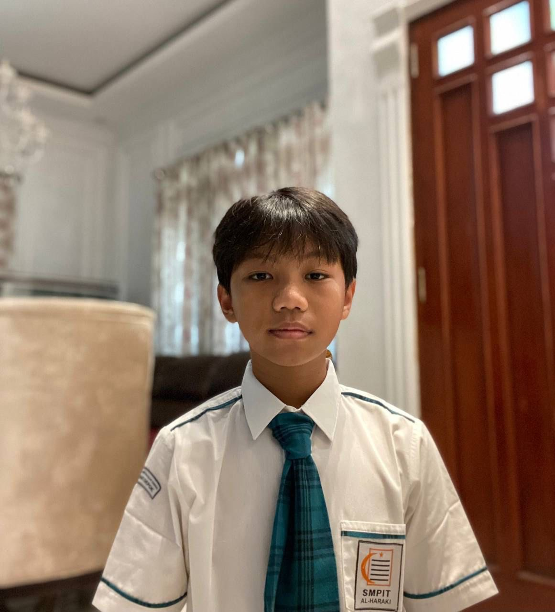

Karya Nyata dari Proses Belajar

-
Nama saya Fabio Narendra Anugrah, siswa kelas 9 Al Araf di SMPIT Al-Haraki.
Saya lahir di Depok pada 25 Mei 2011 dan merupakan anak kedua dari dua bersaudara. Saat ini, saya sangat gemar berolahraga serta aktif melakukan berbagai kegiatan positif yang dapat menunjang masa depan saya nantinya. Fokus utama saya sekarang adalah mempersiapkan diri dengan sebaik mungkin agar bisa meraih hasil maksimal dalam setiap penilaian akademik. Tujuan besar saya saat ini adalah berhasil menembus SMA impian, dengan target utama SMAN 1 Depok atau jika memungkinkan, SMAN 28 Jakarta. Saya sedang berupaya keras mengoptimalkan nilai Tes Kompetensi Akademik (TKA) agar memenuhi kualifikasi di sekolah-sekolah unggulan tersebut. Dengan dedikasi dan persiapan yang matang, saya optimis dapat meraih pendidikan terbaik demi membangun masa depan yang cerah.
Saya berminat dalam bidang olahraga dan hal yang berkaitan dengan kehidupan sehari-hari. Meskipun masih memiliki beberapa kekurangan, saya tetap bersemangat untuk belajar dan berkembang. Saya percaya dengan latihan dan konsistensi, kemampuan saya dapat meningkat serta membantu saya menjadi pribadi yang lebih disiplin dan bertanggung jawab.
Cita-cita saya adalah menjadi seseorang yang bekerja di bidang ekonomi atau teknik udara. Saat ini, harapan saya adalah dapat masuk ke SMAN 1 Depok, kemudian melanjutkan pendidikan ke Fakultas Ekonomi dan Bisnis Universitas Indonesia atau Fakultas Teknik Universitas Indonesia agar dapat mengembangkan kemampuan dan meraih masa depan yang saya inginkan.
Kesan dan pesan saya selama di SMPIT Al-Haraki adalah saya mendapatkan banyak pengalaman serta ilmu yang penting, dan teman-teman yang saya temui juga memberikan pengaruh positif bagi saya. Saya merasakan banyak perubahan dari SD ke SMP, karena saat di SD saya memiliki beberapa teman yang berpengaruh kurang baik, namun setelah pindah ke SMPIT Al-Haraki, saya berada di lingkungan yang lebih mendukung sehingga membantu saya menjadi pribadi yang lebih baik dan berkembang. Selain itu, ada banyak kegiatan yang sangat seru dan berkesan seperti kegiatan di Cigombong, Solo, Jogja, Magelang, entre tour, English camp, kegiatan organisasi, dan lain-lain.